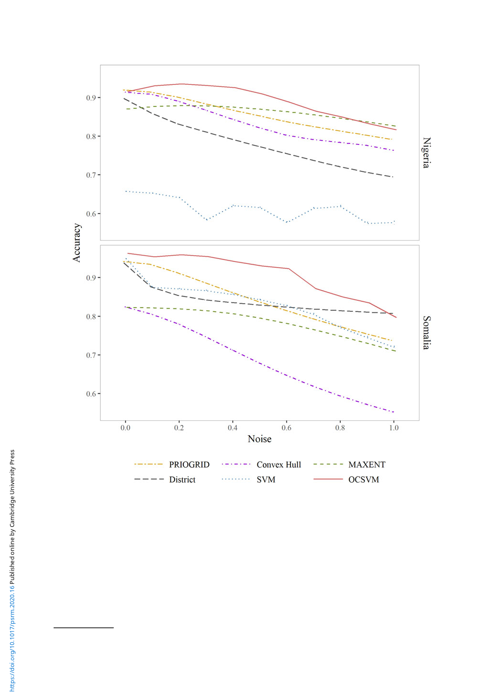

106 Kyosuke Kikuta
Figure 4. Simulation: performance comparison.
Note: The figures shows the performances of PRIOGRID assignment (yellow dot-long-dashed line), district assignment (gray long-
dashed line), a convex hull (purple dot-dashed line), support vector machine (blue dotted line), maximum entropy method (green
dashed line), and OCSVM (red solid line). The upper and lower panes show the results when the territories of Nigeria and Somalia
are used in the simulation respectively. The horizontal axis shows the level of noise in the observed data (σ). The vertical axis
shows the accuracy. The confidence intervals are very small and hence not reported.
indicate “few” or more destruction, it is considered as evidence for the presence of conflict, and
hence the outcome variable takes a value of 1.
I conduct a two-fold cross-validation test with the housing destruction data. I first randomly split
each of the destroyed and unaffected villages to two groups. The assignments of the PRIOGRID
cells and township polygons,19 convex hull, SVM, MAXENT, and OCSVM are then applied to
19The townships are the third-order administrative units next to districts. There are only five PRIOGRID cells and three
townships in the Rohingya region (there is only one district). Despite this fact, I use the PRIOGRID and townships because